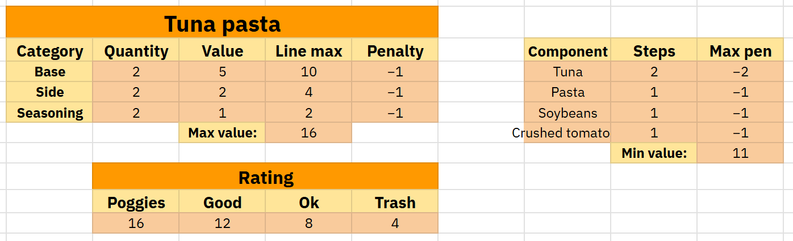
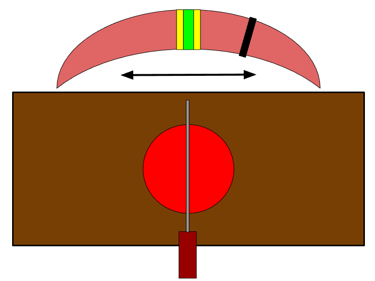
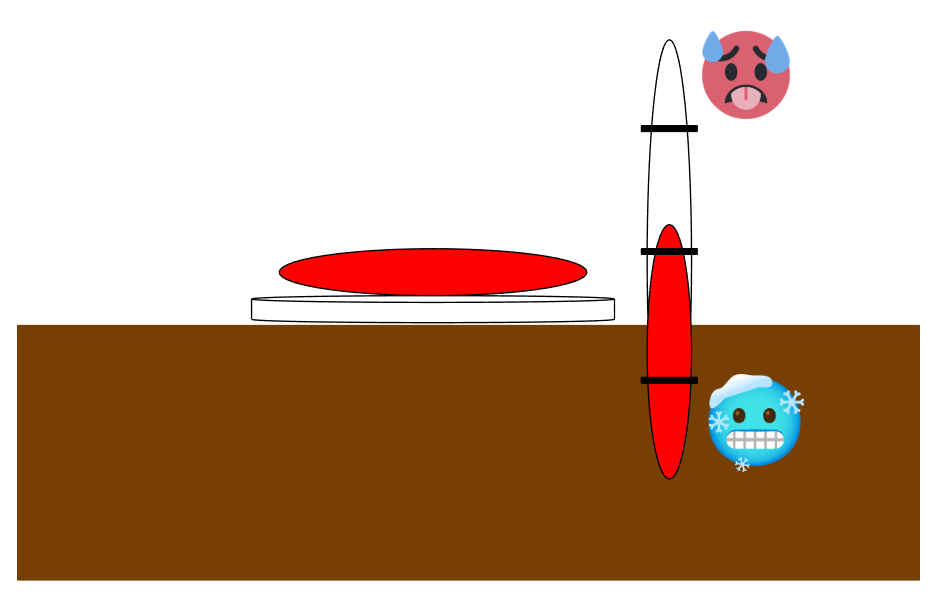

A third-person cooking platformer about a rat running a food truck in a world
dominated by cats. Designed to reward careful cooking decisions
instead of speed alone.
I worked on Squeak N' Serve as one of two designers
in a team of 4. While the other designer
focused on level design, I concentrated on designing
the game's interconnected cooking systems, working
closely with our programmer.
I also contributed with 3D art and visual effects.
01
Gameplay systems
Designed ordering, cooking, recipes and grading
to create meaningful decisions throughout the cooking process.
02
Player onboarding
Designed a step-by-step tutorial using visual
guidance and "learning by doing".
03
3D Art & VFX
Modeled ingredients and dishes. Created visual
effects to communicate gameplay information.
02 / DESIGN VISION
Challenge the player without relying on timers
When analyzing other existing cooking games, I noticed that many
relied heavily on pressure stemming from time to challenge the player.
I wanted to explore a different approach: a cooking game where the challenge
came primarily from making good decisions rather than making them quickly.
The Main Design Challenge
How can a cooking game challenge players through
preparation, decision-making
and precision without relying too much on time pressure?
My approach was to build interconnected systems around
interpreting customer requests, selecting appropriate
recipes, preparing ingredients and evaluating the finished dish.
03 / GAMEPLAY SYSTEMS
Designing the cooking experience
The core cooking loop
Four interconnected systems form the foundation
of the cooking experience.
01 / ORDERING
Interpret the request
Customers describe what they want without necessarily
naming a specific dish.
02 / RECIPES
Choose a dish
Use the recipe book to identify suitable ingredients
and preparation methods to meet customer's needs.
03 / COOKING
Prepare the food
Cut, boil, fry and combine ingredients
using the available cooking stations.
04 / GRADING
Evaluate the result
Serve the dish and receive a grade based on how well it
was prepared and also how well it fit the customer's needs.
How the systems connect:
Customer requests inform recipe selection,
cooking turns those decisions into actions,
and grading evaluates the finished dish.
SYSTEM 01 · ORDERING
Turn dialogue into a decision
Rather than having customers request a specific dish,
I designed the ordering system around interpreting
their dialogue and determining what they want to eat.
My intent
Encourage players to pay attention to customers and
think critically about which dish would best satisfy
their requests.
Player-facing behaviour
The player picks up the chef's hat, approaches the
ordering window and interacts with the customer.
The customer then describes what they want,
providing clues about suitable ingredients.
EXAMPLE CUSTOMER REQUEST
“I want something with tomatoes.”
The player needs to interpret this clue and determine
which available recipe would best fit the request.
SYSTEM 02 · RECIPES
Give players the tools to make informed decisions
The recipe system supports the player's decisions
by providing information about available dishes,
their ingredients and how they should be prepared.
My intent
Give players a reference point when deciding what
to cook, while connecting their choices to the
cooking and grading systems.
Player-facing behaviour
Players consult a recipe book containing the
available dishes and their preparation requirements.
What makes up a recipe?
01 / BASE
Base ingredient
The main ingredient used as the foundation
of the dish.
02 / SIDES
Additional ingredients
One or more ingredients that complete
the dish.
03 / PREPARATION
Cooking instructions
Information about how the ingredients
should be prepared.
Connection to grading
The recipes establish the requirements that are
used to evaluate the player's finished dish.
Design flexibility
The number of available dishes and sides could
be adjusted to change the complexity of deciding
what to cook, creating opportunities for
difficulty progression.
SYSTEM 03 · COOKING
Turning decisions into actions
Cooking forms the central activity of Squeak N' Serve.
Players physically navigate between cooking stations,
prepare ingredients and combine them to make dishes.
My intent
Make cooking an active process that encourages players to
plan their preparation and navigate between stations, rather
than simply selecting finished dishes from a menu.
Player-facing behaviour
The player carries ingredients to cooking stations,
processes them using different interactions and
combines ingredients according to their chosen recipe.
Three cooking stations
01 / BOILING
Boiling station
The player throws an ingredient into the station
and presses a button to begin boiling.
02 / CUTTING
Cutting station
The player throws an ingredient into the station
and repeatedly presses a button to cut it.
03 / FRYING
Frying station
Uses the same basic interaction as boiling,
providing another preparation method
for ingredients.
Combining ingredients
Ingredients can be combined by throwing one
on top of another at a cooking station,
allowing players to assemble dishes
from multiple components.
SYSTEM 04 · GRADING
Rewarding good decisions, not just speed
The grading system evaluates the dish the player
prepares, providing feedback based on the ingredients
used, how they were cooked and the customer's taste.
My intent
Reward players for preparing the correct ingredients
without making mistakes overly punishing.
I wanted players to experiment and improve
their cooking through experience.
Player-facing behaviour
After preparing a dish, the player throws it
back to the customer. The game then evaluates
the dish and provides a grade.
How dishes are graded
TRASH
Incorrect preparation
The player used incorrect ingredients
or prepared them incorrectly.
OK
Correct base
The player selected and correctly
prepared the dish's base ingredient.
GOOD
Correct base and sides
The player correctly selected and
prepared both the base and side ingredients.
Design-phase extension:
A fourth tier, Perfect, was designed around
additional requirements such as seasoning,
but was not implemented in the playable game.
Simplifying an overengineered system
My initial design evaluated individual categories
of a dish by increasing or decreasing a numerical
score based on the player's performance.
On reflection, I considered this approach
unnecessarily complicated for the experience
I wanted to create. I replaced it with simpler grading tiers
that communicated performance more directly.
01 / INITIAL APPROACH
Numerical scoring
Individual aspects of the dish contributed
positive or negative values to a final score.
02 / REVISED APPROACH
Performance tiers
The grade communicates which requirements
of the dish the player successfully fulfilled.

My original grading design, before simplifying
the system into performance tiers.
Design takeaway
A more complex system is not necessarily
a better one. Simplifying the grading rules
allowed me to preserve the intended reward
structure without unnecessary complexity.
04 / DESIGN ITERATION
Exploring ways to deepen the cooking experience
Playtesting revealed opportunities to introduce
more challenge, variation and reduce downtime.
In response, I explored additional mechanics
that could make cooking more engaging without
relying primarily on conventional time limits.
The following concepts remained in the design
phase and were not implemented in the playable game.
CONCEPT 01 · NOT IMPLEMENTED
Timing-based cutting
The existing cutting station relied on
repeatedly pressing a button. I explored
replacing this with a timing challenge
where players would need to press a button
when an indicator entered a target zone.
The goal was to introduce a skill-based
interaction that required more precision
from the player.

Early cutting minigame concept.
CONCEPT 02 · NOT IMPLEMENTED
Food temperature
I explored the idea of a temperature system where
ingredients would heat up while boiling
or frying and gradually cool down
when no longer being cooked.
Recipes could require certain temperatures
to achieve a Perfect grade, encouraging
players to consider the order in which
they prepared different ingredients.

Food temperature design concept.
CONCEPT 03 · NOT IMPLEMENTED
Seasoning
Another proposed system introduced three
taste properties: sweetness, heat and
saltiness, each measured on a scale
from 1 to 5.
Players could season ingredients and
taste their food up to two times safely.
Recipes and customer preferences would
establish the desired taste values.
The intention was to add another layer
of precision and experimentation to
preparing the ideal dish.
05 / PLAYER ONBOARDING
Teaching players through interaction
Early playtesting revealed that some players
felt lost and were unsure of what they were
supposed to do.
To address this, I designed a guided tutorial
that introduced the cooking mechanics through
practical actions rather than relying entirely
on written explanations.
The Onboarding Challenge
How can players learn several interconnected
cooking mechanics without becoming overwhelmed
by instructions?
My approach
01 / LEARNING BY DOING
Introduce mechanics through actions
Players follow practical instructions
and learn by performing the interactions
themselves.
02 / VISUAL GUIDANCE
Show players where to go
A large arrow above the player points
towards their next destination, reducing
uncertainty about where to move.
03 / STEP-BY-STEP INSTRUCTIONS
Introduce one task at a time
The tutorial guides players through
individual tasks, using icons instead
of text whenever possible.
Feedback and tradeoffs
Later feedback suggested that the tutorial
communicated its instructions clearly.
Players appreciated the highlighting of
essential words, and did not report
any unclear tasks.
However, opinions about the amount of
guidance were mixed. Some players found
the tutorial too hand-holding, while
others felt the guidance was appropriate.
This highlighted the challenge of balancing
clarity with player independence.
06 / PLAYTESTING
What we learned from players
We conducted playtests to evaluate the game's
visual style, cooking gameplay loop and tutorial.
The feedback helped us identify both strengths
and areas that needed further development.
WHAT WORKED
Players appreciated the core experience
Players generally responded positively to the
cooking gameplay loop and felt that the grimy
visual style suited a game about a rat running
a food truck.
WHAT NEEDED IMPROVEMENT
More challenge and less downtime
Despite the positive reception, players
identified opportunities to improve the
cooking experience.
Reduce downtime between meaningful actions.
Introduce more challenge to cooking.
Increase variation in gameplay.
MY DESIGN RESPONSE
Exploring additional cooking mechanics
The feedback motivated me to explore new
ways of introducing challenge and variation.
I developed concepts for a timing-based
cutting minigame, food temperature and seasoning.
These proposals were not implemented in the
playable version, but helped me explore how
the cooking loop could be expanded without
abandoning the original design vision.
Alongside my design responsibilities, I worked
on 3D modeling and visual effects.
Our deliberately grimy and blocky visual style
suited the game's setting and the team's
production capabilities.
01
3D Modeling
I modeled most of the game's dishes
and their ingredients.
02
Visual Effects
I created VFX to communicate
important gameplay information,
including cooking and movement.
03
Visual Consistency
I developed assets within the
established art style while
working alongside the team's
other artists.
Visual effects as gameplay feedback
I wanted visual effects to serve a functional
purpose. Smoke and other effects could
reinforce what was happening during gameplay,
communicating information through the
environment rather than relying solely on UI.
COOKING
Communicating activity
Smoke effects help indicate when
ingredients are being cooked.
MOVEMENT
Reinforcing player actions
Visual effects provide feedback
when the player is sprinting.
08 / REFLECTIONS
What I learned
Systems Design
Designing the cooking loop taught me how
interconnected systems can support
a shared gameplay goal.
Ordering, recipes, cooking and grading
needed to work together to create
meaningful player decisions.
Player Onboarding
Designing my first game tutorial showed
me the importance of teaching through
interaction and giving players
clear visual guidance.
It also highlighted the challenge of
balancing handholding with freedom.
3D Art & VFX
I gained experience creating visual
effects in Unity and producing 3D assets
within an established art style.
The project also reinforced how visual
presentation can contribute to
gameplay communication.